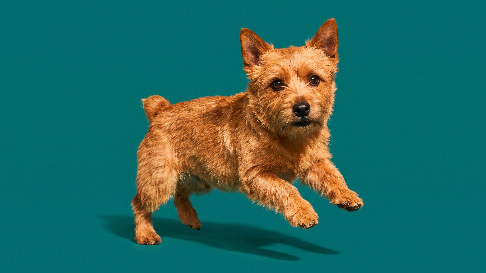

Норвич-терьер — один из самых маленьких терьеров в мире: взрослая собака весит около 5 кг. Но размер не отменил назначение: норвич выводился для охоты на лисицу и норных вредителей, и этот инстинкт никуда не делся. В паре с компанейским характером это даёт неожиданно удобную городскую собаку — если понимать, что за ней стоит.
🐾 Ваш питомец — норвич-терьер?
Заведите профиль в AnimaLife: приложение запомнит породу, возраст и вес и будет подсказывать по уходу именно для неё. Вопросы AI-ветеринару — круглосуточно и бесплатно.
Завести профиль → Завести в MAX →
У вас iPhone? AnimaLife есть в App Store
Путаница происходит постоянно: до 1964 года это была одна порода. Затем FCI разделила их по одному признаку — ушам. Норвич-терьер носит уши торчком, норфолк-терьер — висячими. Больше никакого надёжного внешнего отличия нет: размер, шерсть, окрас совпадают почти полностью. Если видите маленького рыжего жёсткошёрстного терьера — смотрите на уши.
Норвич сохранил охотничий напор, но избежал той межсобачьей агрессивности, которая есть у многих терьеров. Он хорошо уживается с другими собаками в семье — при условии ранней социализации. К кошкам относится терпимо, если вырос рядом. К мелким грызунам — нет: инстинкт сильнее воспитания.
С людьми норвич открыт и привязчив. Он не выбирает одного хозяина в противовес остальным — ему нравится вся семья. Долгое одиночество переносит плохо: начнёт копать, жевать, голосить. Это не капризы — это порода, которой нужно общение.
Обучаемость хорошая, но с оговоркой: норвич умный и быстро учится, но также быстро скучает от повторений. Короткие сессии по 5–7 минут работают лучше получасовых занятий.
Норвич энергичен, но компактен — и это делает его вполне городской собакой. Ему не нужно поле или двор, чтобы не сходить с ума. Достаточно двух прогулок в день по 30–40 минут с активным исследованием — нюхательные игры, апортировка, смена маршрутов. Без движения норвич направит энергию внутрь квартиры.
Жёсткая шерсть норвича устроена иначе, чем мягкая. Её не стригут машинкой — стрижка разрушает текстуру, шерсть становится мягкой и теряет защитные свойства. Правильный уход — тримминг: выщипывание отмершей жёсткой ости вручную или специальным ножом.
Тримминг делают 2–3 раза в год. Найдите грумера с опытом работы с жёсткошёрстными терьерами — это важно. Между сессиями расчёсывайте щёткой с жёсткой щетиной 1–2 раза в неделю, убирайте отмершие волоски стриппинг-камнем.
Купают норвичей редко: жир в шерсти защищает кожу. Частое мытьё смягчает ость быстрее, чем тримминг успевает её восстановить.
Здоровье обсудите с ветеринаром при первом визите: для маленькой породы важен контроль зубов (скученность), суставов и сердца по мере взросления.
🐾 У вас норвич-терьер?
AnimaLife соберёт уход под породу: к каким болезням есть склонность, что проверять по возрасту, чем кормить и когда пора к врачу. Бесплатно, прямо в мессенджере.
Собрать план ухода → Собрать в MAX →
У вас iPhone? AnimaLife есть в App Store
🐾 Понравился разбор?
Подпишитесь на канал — каждый день разбираем по одному тревожному симптому у кошек и собак: что в пределах нормы, а когда пора к врачу. Подпишитесь, чтобы не пропустить разбор, который может спасти здоровье вашего питомца.
Материал носит информационный характер и не заменяет очную консультацию ветеринара.